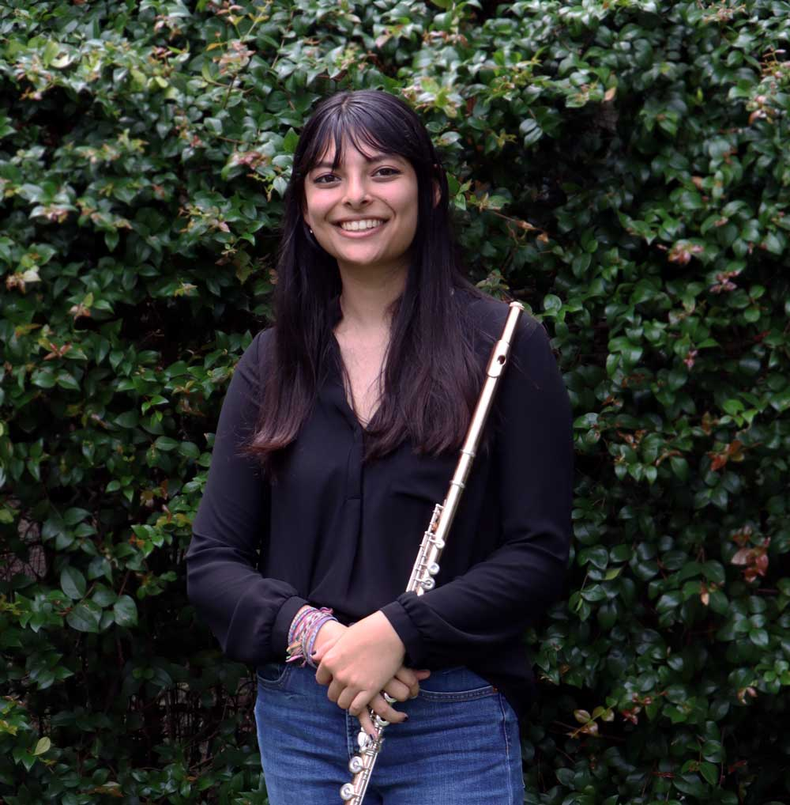

About me
Hi! My name is Anjali, and I’m a flutist hailing from Orlando, Florida. Currently located in New York City, I have been studying with the great Judith Mendenhall at Mannes School of Music.
Last year I graduated from the Frost School of Music at the University of Miami (BM ’21.) During my time at Frost, I had the honor of studying under Professors Trudy Kane, Jennifer Grim, and Valerie Coleman. I also performed frequently in the Frost Symphony Orchestra, directed by Gerard Schwarz, and the Frost Wind Ensemble, directed by Robert Carnochan.
Since moving to New York, I have delved into the world of free improvisation! In school, I've had the opportunity to participate in workshops with artists involved with the Stone, John Zorn's legendary experimental music venue, as well as his record label, TZADIK. Getting this hands-on experience through workshops and ushering at the Stone has opened me up to the world of free improvisation.
Over my years in various orchestras, I’ve gotten the opportunity to sit as principal flute for many wonderful works such as Ravel’s Mother Goose Suite, Richard Strauss’ Le Bourgeoise Gentihomme, Grieg’s Peer Gynt Suite, and Bizet’s Carmen Suite. In addition, I’ve gotten to perform many other incredible works such as Mahler’s 7th Symphony, Shostakovich’s 10th Symphony, Brahms’ 2nd Symphony, and Kodaly’s Concerto for Orchestra. While at Frost, I’ve also had the chance to premiere both James Stephenson’s Symphony no. 3 and Aaron Kernis’ orchestral arrangement of his piano work For Those We Lost. In the Spring of , I also played piccolo with the Frost Symphony Orchestra in concert with Renee Fleming at the FrostFest Music Festival.
In the fall semester I got to close out my time at Frost with a senior recital programmed with a lot of my favorite repertoire, and my favorite collaborators, including a premiere of a work by Tanner Porter, as well as my own arrangement of the Tennessee Waltz with my cross-genre acoustic chamber band Everwild. I greatly enjoyed digging into works which intrigue the ear, tug at heartstrings, and make audiences consider their place within the world. You can find some videos from my recital here and more information about Everwild here!
Outside of school, I have attended the Aria Academy Flute Workshop, Boston University Tanglewood Institute, and was accepted to the Eastern Music Festival for the Summer of 2020. I’ve also worked with esteemed flutists James Galway, Jim Walker, Bonita Boyd, Linda Chesis, Judith Mendenhall, Sarah Frisof, Aaron Goldman, Linda Toote, Nestor Torres, John Thorne, Molly Barth, and Clint Foreman.